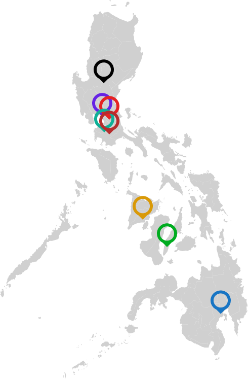

As the world changes andbecomes increasingly riddled with uncertainty, so do the issues of thriving
in it become more complex.Thriving, not just living. Not merely existing but flourishing, capable of
navigating life
successfullyand progressively. COVID-19 has made the volatility of thriving all too clear. It has
not only
emphasized the varying degrees […]
As the world changes andbecomes increasingly riddled with uncertainty, so do the issues of thriving
in it become more complex.Thriving, not just living. Not merely existing but flourishing, capable of
navigating life
successfullyand progressively. COVID-19 has made the volatility of thriving all too clear. It has
not only
emphasized the varying degrees […]
A UP education seeks to produce graduates imbued with an abiding sense of responsibility to their
people and nation, the skills and mindsets to improve human life, and a commitment to the freedom
and welfare of all.
Aside from mastery of knowledge in their specific disciplines, UP graduates must possess breadth of
mind, strength of character, and generosity of spirit, fostered by a firm grounding in both the arts
and sciences, and such specialist courses as their programs may require.
|
 |